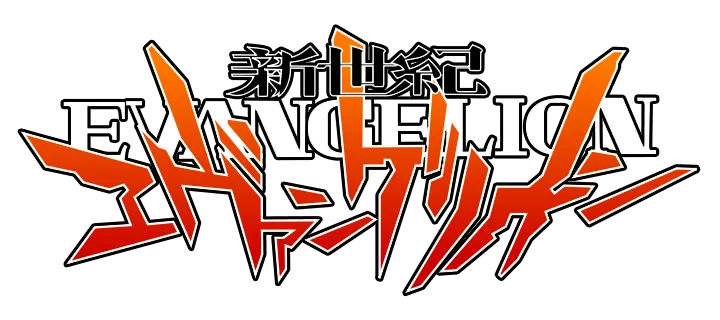
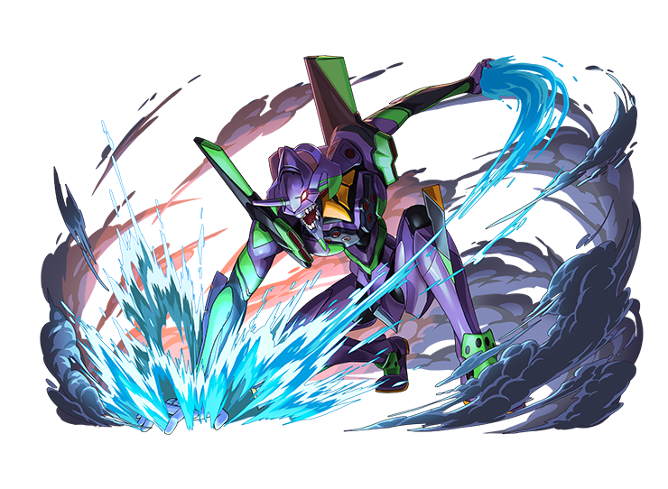
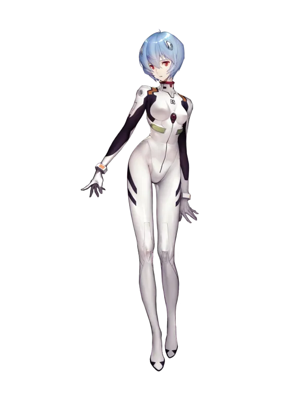
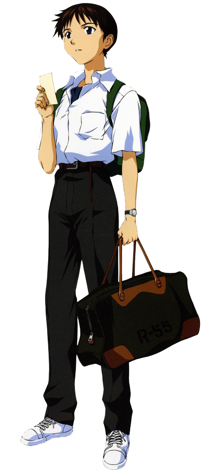
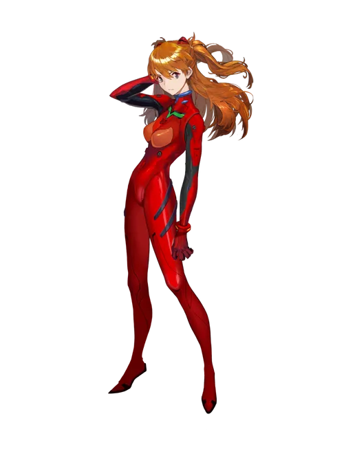

세컨드 임팩트라는 대재앙 이후, 인류는 멸망의 위기에 처하게 된다. 인류의 마지막 희망이 된 비밀 조직 NERV는 정체불명의 존재 ‘사도(Angel)’에 맞서기 위해, 거대한 생체기계 병기 ‘에반게리온’을 개발한다.
신지 이카리, 아야나미 레이, 소류 아스카 랑그레이를 비롯한 십대 소년소녀들이 파일럿으로 선택되어 이 거대한 병기를 조종하게 되며, 이들은 전투를 통해 사도뿐만 아니라 자신 내면의 상처와 공포, 그리고 인간 존재에 대한 근본적인 진실과 마주하게 된다.
에반게리온은 정체성, 외로움, 자유 의지, 그리고 사람 사이의 연약한 연결고리 등 복잡하고도 깊이 있는 주제를 다룬다. 표면적으로는 로봇 애니메이션처럼 보이지만, 그 안에는 철학적이고 감정적인 서사가 자리하고 있으며, 전 세계의 수많은 팬들에게 오랫동안 큰 울림을 주고 있다.
이 모든 이야기의 끝에는 과연 어떤 진실이 기다리고 있을까...

성격말수가 적고 감정을 거의 드러내지 않음. 무표정하고 차분한 태도가 특징이며, 타인의 감정에 큰 관심을 보이지 않음.
배경그녀의 정체는 복잡한 과학적 비밀에 둘러싸여 있으며, 육체적으로는 인간이지만 인간 이상도 이하도 아님.
특징지에게 점차 마음을 열어가며, 인간성과 감정에 대한 의문을 품기 시작함.
명대사“나는 네가 죽지 않았으면 좋겠어.”
성격내성적이고 감정 표현에 서툰 소년. 타인과의 관계에서 상처받는 것을 두려워하며, 타인의 기대에 부응하려는 강박을 가짐.
배경NERV 총사령관 이카리 겐도의 아들. 어릴 적 부모에게서 버림받은 기억이 깊은 심리적 상처로 남음.
특징반복되는 전투와 주변 사람들의 기대 속에서 ‘자신이 왜 싸워야 하는가’에 대한 정체성의 혼란을 겪음.
명대사“도망치면 안 돼... 도망치면 안 돼...”


성격자신감 넘치고 자존심이 강함. 타인에게 인정받고자 하는 욕망이 크며, 감정을 겉으로 분출하는 타입.
배경독일계 혼혈로, 어린 시절의 외로움과 상처가 공격적인 태도로 표출됨.
특징뛰어난 전투 실력과 자긍심을 가졌지만, 신지와의 관계, 파일럿으로서의 위기 등에서 심리적 붕괴를 경험함.
명대사“바보 신지!”